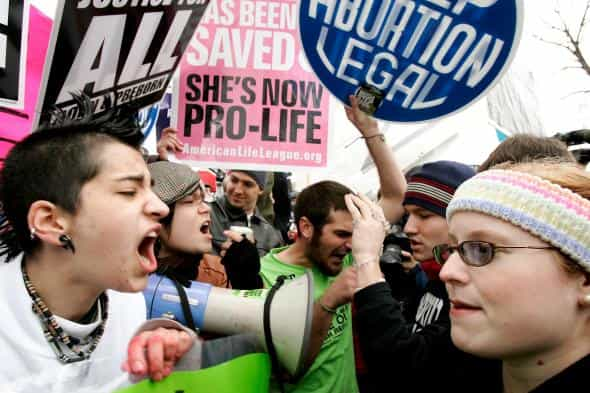
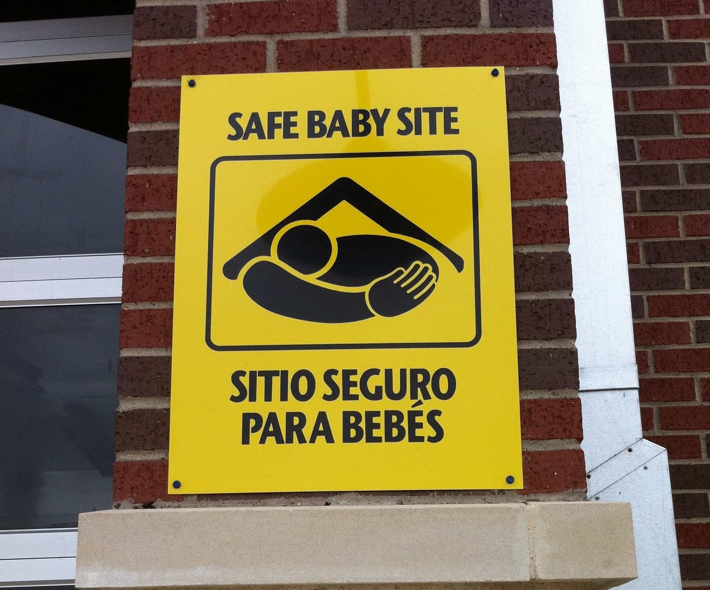
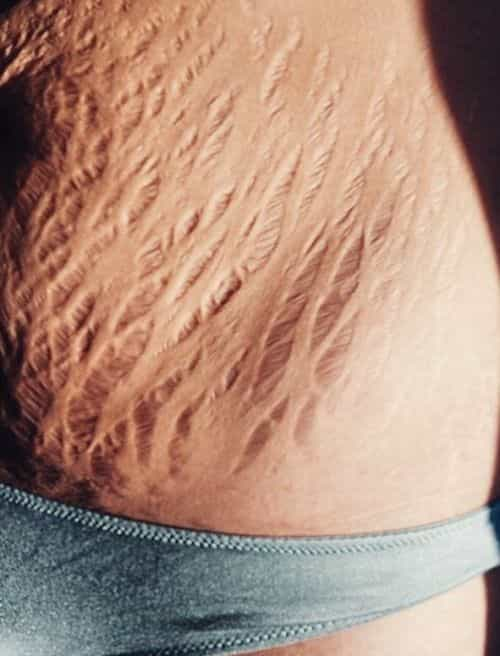

This isn’t political or religious, but there are red pill implications around every corner when it comes to abortion. This is a fundamental right to human decency.
I’m not anti-abortion for religious reasons (I’m in a bit of a transitional phase regarding my own religious views these days). I’m not anti-abortion because of my political views (I’m certainly not Democrat but that doesn’t automatically make me a Republican either). I’m anti-abortion because abortion is wrong. I’m going to talk about why it’s wrong, and the real reason women get them.
Let’s get one thing straight here: abortion is literally killing people before they’re born. We can give it all kinds of fancy medical terms like and terms like “early pregnancy termination”, “forced miscarriage”, and things like that, but at the end of the day, abortion is killing people before they are born. Period.
Something people seldom realize…
Anytime there’s a polarizing political or religious issue, the two sides become very angry with each other. We’ve seen it on the news, on social media, and on YouTube videos. The thing is, most of these people don’t feel as much passion for their side of the cause as they do anger for the opposition. And at some point it becomes more about pissing the other side off and hating those who oppose them than the actual cause itself.
It’s almost as though if there were no opposition, there’s no cause.
People who are pro-choice (which is pro-abortion without actually having to say that they are) are generally very angry because of people who are pro-life and vice versa. Bombing abortion clinics is an idiotic thing to do but they justify their anger with their position. Encouraging young women to sleep around for the sole purpose of getting an abortion then posting it to social media is equally foolhardy and is only done to incite anger and hostility with the other side.

At some point it becomes more about the opposition than the actual cause
People can say whatever they want, there’s no way pro-choice advocates are this passionate about killing babies before they take their first breaths. In an honest moment, if posed the literal question “Are you really this gung ho about inserting sheers into a vagina and cutting up a fetus?” they’d tell you they were not.
But their anger simply comes as an overcorrection to pro-life advocates and that’s all there is to it.
The excuses they use to justify abortions
Let’s keep it 100 here… there are so many bad excuses I don’t even know where to start, but I’ll point out a few of the most ubiquitous:
“I don’t want to bring an child into this cruel world!”
Bullshit. You don’t give a damn about anybody but yourself and now we’re supposed to believe that all of a sudden you care about your unborn child? So much so that you’re willing to kill it to keep it away from the perils of life? Get the fuck outta here with that noise.
Have the kid, put it up for adoption. There are plenty of barren couples who would love to adopt an infant and raise it as their own, and you know this.
“I’m not ready to be a parent!”
Nobody is, sweetheart. But you shoulda thought of that before you let him raw dog you and beg him to shoot his load in you because it was “soooo hawt!” Thankfully for you, as stated above, there’s the adoption option if you want to circumvent the consequences of your slutty actions… again.
There are also thousands of firehouses, police stations, and other organizations that will take a newborn off your hands no questions asked. But that would be too easy wouldn’t it?

No excuses not to take advantage of this easy, free option
“Well I don’t want it to be in foster care! I’ve heard stories!”
So raise it yourself. Oh, you don’t want to? Right…. that “cruel world” excuse again.
“My body my choice!”
Ahhh, so now that you want an abortion, daddy doesn’t get a say but if you have the kid NOW you want his financial support. NOW you want him involved. Making selfish decisions is always unilateral. Making selfless decisions has to involve the father, especially if there’s a financial windfall.
You don’t have the kid without his sperm. Your baby’s body does not belong to you. Making a decision to end his or her life is not your decision.
“What if the mother’s health is at risk?!?”
It ain’t 1820 people, it’s 2018. Women don’t die during childbirth anymore. With all the advances in made science and medicine the last half century, mother and child would both be just fine. Try again.
“What if she was raped?!”
Regret sex isn’t rape. Getting raw dogged in a bathroom club isn’t rape. Having consensual sex under the influence of alcohol isn’t rape. Getting knocked up by your boss isn’t rape.
Even if a woman was forced to have unprotected sex against her will, why would she punish the kid? It didn’t ask to be conceived. Again, give it up for adoption if you can’t stomach looking at it as a reminder of your assailant (and make sure you call the cops).
All of these weak “reasons” are just excuses not to carry a child to term. So let’s stop beating around the bush and say out loud what people are afraid to say when it comes to why women get abortions…
Women get abortions because they don’t want to ruin their bodies

Childbirth is hard on a woman’s body
That’s right I said it. Women get abortions because they don’t want to ruin their bodies. And any pregnant woman thinking about abortion would tell you the same thing if she’s being honest.
Having a kid destroys a woman’s body. They get stretch marks (if they don’t do what’s necessary to avoid them and most don’t), their tits sag, their vaginas get looser, the list goes on and on. If a girl’s body isn’t as tight and supple as it was pre pregnancy this means she’s going to get a lot less of what women covet the most.
Male attention.
Girls can say whatever they want but they don’t want the the c-section scars, the weight gain, the postpartum depression, and everything else that comes with passing a kid through their money makers. Then in order to get their bodies to some semblance of what it used to be, they’ve gotta do kegels, live in the gym, slather on cocoa butter, watch their diets, all while raising a miniature person who doesn’t speak English, cries every hour, shits every two hours, and requires ’round the clock monitoring. A tall task indeed.
“Oh c’mon Donovan! You don’t know what’s in people’s minds! You don’t know this is the reason women get abortions!”
Oh? Well consider this: 99.9% of women who get abortions don’t have children. This means that most women who terminate their pregnancies have never carried a pregnancy to term. Do I need statistics to back that up? No.
The only exceptions are wives who get knocked up by their paramours and don’t wanna blow up the sweet deal that is married life as a woman in this day and age. And most of those women end up having the kid anyway and let the husband think it’s his (unless of course, she gets fertilized by a brotha, but that’s for another post).
But women who get abortions aren’t women who have had children. Most women who make this choice have never carried a pregnancy to term because they simply do not want to ruin their bodies. A woman with children has already ruined her body, so what’s another kid?
Girls don’t want their young, tight, nubile bodies to go through the arduous task of having a kid so they take the easy way out and blame it on the aforementioned “reasons” to justify their bad decision to do so.
I will never understand…
Why do people seem to care more about animals than people? Sure, familiarity breeds contempt but that doesn’t rise to the level of losing our minds when we find out Michael Vick had a dog fighting ring but yawning when Dante Stallworth drives drunk and kills a pedestrian. These liberal fucktards think it’s cool and chic to “prefer animals to people.”
Micheal Vick caught more heat for this than Stallworth caught for killing a PERSON
If we found out there was a veterinarian aborting puppies and kittens we’d lose our fucking minds. But human babies? Oh we’re good with that.
Conclusion
Regardless of religion or politics, there’s no way you can tell me that killing people before they are born is the right thing to do in any situation. 99.9% of the time abortions are performed for selfish reasons.
And don’t start with the outlier situations. Don’t come at me with “Well I know a girl who would have died had she had the kid” or “I knew a girl who couldn’t find the right family to adopt her kid so she said fuck it!” Miss me with that bullshit.
My own mother had at least 2 abortions after she had 5 kids as a result of an affair she was having, so there’s your outlier. My sisters on the other hand have had multiple abortions. One has 3 children, but the first time she was pregnant, she had an abortion. My other sister doesn’t have any kids and has also had multiple abortions. It is disingenuous and irresponsible to refute a macro argument with a micro argument.
The bottom line is that women get abortions to keep themselves fuckable, so they get more chances to have unprotected sex which leads to… wait for it… more abortions. Its’ fucking sad but that’s how it is.
Killing people before they’re born because women can’t be bothered to carry a pregnancy—that she was complicit in—to term so she can go out and party and do drugs, and drink, and continue to have unprotected sex so she can do it all over again is wrong. And that’s all there is to it.
Tune to TSR: primetime Sunday through Thursday evenings at 7EST/4PST on DonovanSharpe.com. If you miss the live show, you can catch the replays here.
Read Next: Are Women Careless With Contraception Because They Love The Attention From Getting An Abortion?